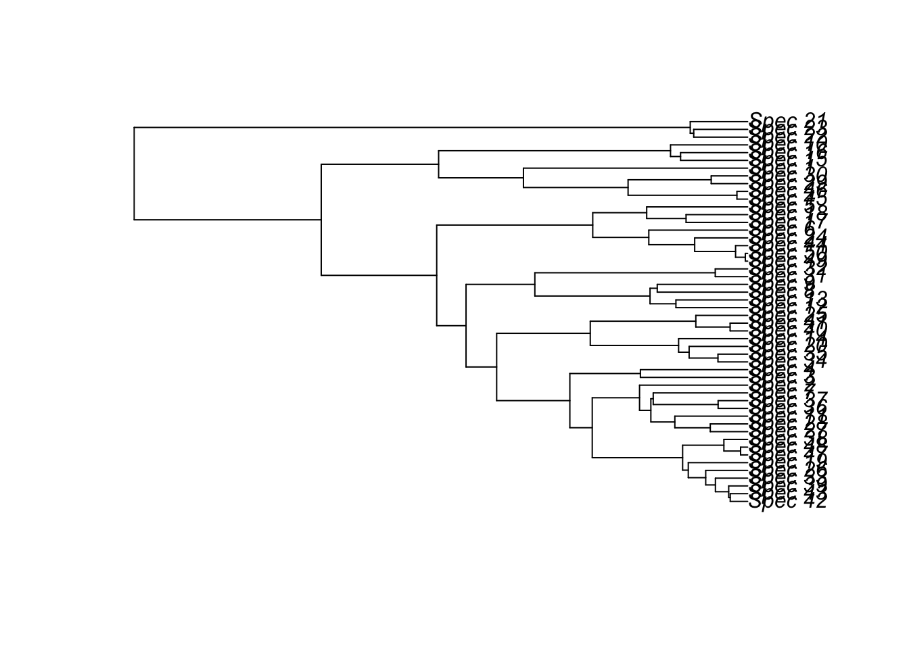
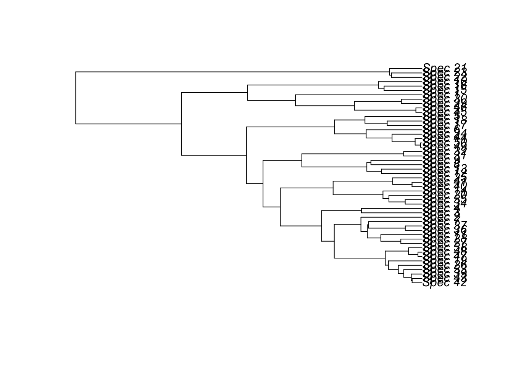
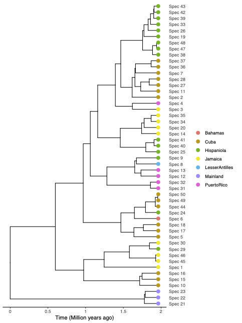
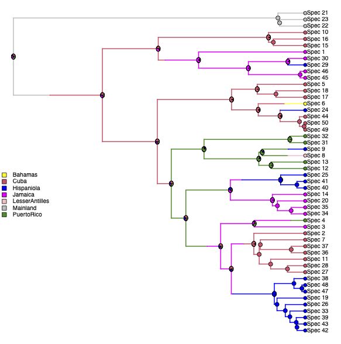

library(ape)
Insula_tree<-read.nexus("/Users/Luis/Desktop/RUG_IslandBiology_MScCourse/Practicals/DAISIE_Insula_frogs/0.Insula_frog_data/Insula.tre")
plot(Insula_tree)
In this practical we will estimate rates of colonisation, speciation and extinction for an (imaginary) genus of frogs found in the Caribbean. We will then use these estimated rates to simulate how the number of species has changed through time in this taxonomic group. The practical will use mainly the R packages DAISIE and DAISIEprep. We will learn how to interpret and prepare data for analyses using DAISIE, how to fit DAISIE models to phylogenetic data, and how to simulate phylogenies of island communities.
The practical is divided into 3 main parts:
Learn how to use DAISIEprep to prepare and extract data (1-2 hours). DAISIEprep is an R package that allows users to format phylogenetic data for subsequent analyses in DAISIE.
Learn how to use DAISIE to estimate parameters and simulate islands (1-2 hours). DAISIE is an R package that allows fitting island biogeography models and simulating islands.
Apply the above approaches to a dataset of frogs from the Caribbean. Writing up this part is the graded assignment.
Before you start with the DAISIEprep and DAISIE tutorials, please read the introduction to the graded assignment below.
You will need to follow the instructions of the tutorials, which are in both in HTML format (.html, open on your internet browser) or in quarto format (.qmd, open in Rstudio). Both versions are exactly the same. The HTML is file easy to view and the quarto file is more interactive as you can run the scripts directly in Rstudio.
The frog genus Insula (imaginary genus, does not exist in reality), is a large genus of frogs of approximately 50 species, distributed in Central America and the Caribbean islands. The majority of the species in the genus are endemic to islands, and it is thought to be a great example of colonisation and diversification on islands. The species of the genus occur in forests, shrublands or freshwater habitats. They are good swimmers but cannot survive in sea water.
One of the most diverse islands for the genus Insula is Hispaniola, a large Caribbean island with a complex geological history. It is thought that Hispaniola has a continental origin, but has been isolated from other landmasses for approximately 40 million years. The mainland pool of closely related species of frogs in the continent (i.e. species that could have colonised the islands) has been estimated to be approximately 100 species. More than 15 species of Insula are thought to be endemic to Hispaniola, with a few species being only recently described or discovered. However, the evolutionary island biogeography of Insula on Hispaniola remains unknown.
A very well-sampled time-calibrated phylogeny for the genus has recently been published, covering all the island where Insula occurs. A few species have been recently discovered and were not sampled in the phylogeny. There is no evidence of recently extinct species. The authors of the study performed an ancestral range reconstruction, so it is possible to infer the ancestral areas and number of colonisation events.
Making use of the knowledge you gathered from DAISIEprep and DAISIE, in combination with the phylogenetic tree and the species checklist provided, you can extract data for the island of Hispaniola and fit DAISIE to the data.
A. How many times has Insula colonised the Caribbean islands?
B. How many times has Insula colonised Hispaniola?
C. How many radiations have occured on Hispaniola?
D. What are the rates of colonisation, speciation and extinction for Insula in Hispaniola?
E. Is there evidence for diversity-dependence in the Insula species of Hispaniola?
F. Is there evidence for equilibrium dynamics on the island of Hispaniola?
G. How has the diversity of Insula on Hispaniola changed through time (according to DAISIE simulations)?
Assignment: run analyses using DAISIE to answer all of the above questions in an individually written report (Word/Google Doc, maximum 3 pages, minimum font size 11) where you briefly describe the methodology used for the analyses of Insula, your main results, and limitations of the analyses. Include any tables and figures that you think could be relevant (be creative!), as long as they are well explained (including legends) and keep within the 3 page limit. Do not include code in the assignment (unless you want to point out something specific with the script). Focus on the interpretation of the results from a biological perspective.
In sum, you need to load the phylogeny into R, use DAISIEprep to extract the DAISIE datalist. Then, fit DAISIE to that datalist to estimate parameters (extinction, colonisation, speciation, carrying capacity, and simulate islands), and to simulate islands. Make use of the DAISIEprep and DAISIE tutorials as well as the Insula tree, tables and figures provided. With these analyses you will be able to answer all the questions.
Insula.tre: the phylogenetic tree of Insula (to be loaded into R for analyses, but also visualized using Figtree): note that the species have numbers instead of latin names (Spec 1, Spec 2, etc).library(ape)
Insula_tree<-read.nexus("/Users/Luis/Desktop/RUG_IslandBiology_MScCourse/Practicals/DAISIE_Insula_frogs/0.Insula_frog_data/Insula.tre")
plot(Insula_tree)
Insula_checklist.xlsx: A species checklist including the distribution, endemicity status as well as the species that are missing from the phylogeny but which should be considered in the DAISIE analyses.Figure_Insula_Tip_states.pdf: A figure of the phylogeny with the tips coloured by the island where the species occurs.
Figure_Insula_ancestral_state_reconstruction.pdf: A figure of an ancestral range reconstruction for the genus.
Tips:
For the DAISIE analyses use:
Island age: 40 million years
Mainland pool size: 100 species
Don’t forget to add the missing species.
After the practical, a file with an example of how to run the Insula analyses will be provided.